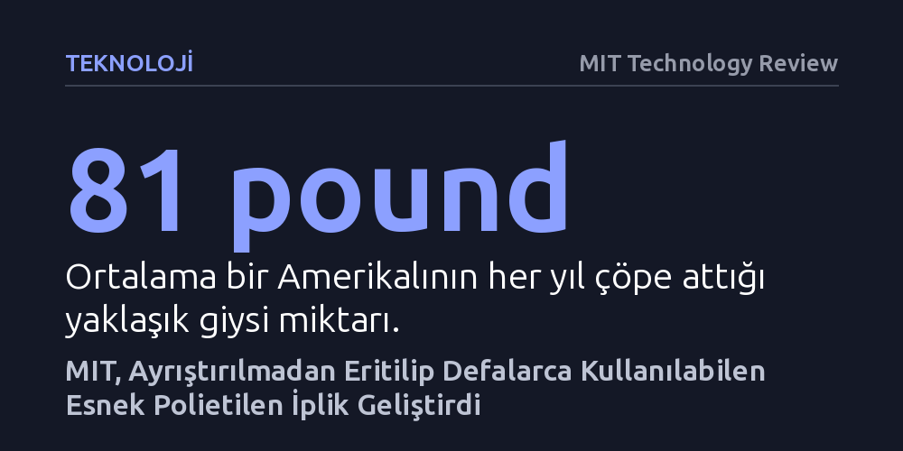

TEKNOLOJI · MIT Technology Review · 2026-10-21
MIT mühendisleri, ayrıştırılması imkânsız geleneksel elastik kumaşların yerine tek kimyasal aileden üretilen ve doğrudan eritilip yeniden eğrilebilen esnek polietilen iplik geliştirdi. On geri dönüşüm döngüsünden sonra bile dayanıklılığını koruyan bu malzeme, tekstil atıklarını giysiden giysiye dönüştürmeyi mümkün kılıyor.
Geri dönüştürülemeyen çoklu lif karışımlarının yerini tek bir polimer ailesinden üretilen esnek ipliklerin alması, tekstil sektöründeki devasa atık krizini lifleri ayrıştırma zorunluluğu olmadan çözebileceğini gösteriyor.

Tüketim kültürünün hızlanmasıyla birlikte tekstil atıkları küresel ölçekte devasa bir çevre krizine dönüştü. Sadece Amerika Birleşik Devletleri'nde ortalama bir kişi her yıl yaklaşık 81 pound (yaklaşık 37 kilogram) giysiyi çöpe atıyor ve bu giysilerin geri kazanılması için neredeyse hiçbir pratik seçenek bulunmuyor.
Sorunun temelinde, günümüz esnek giysilerinde yaygın biçimde kullanılan kumaş mimarisi yatıyor. Rahat ve esnek taytlar, spor kıyafetleri ya da çoraplar; spandeks liflerinin polyester veya naylon ile harmanlanmasıyla elde ediliyor. Ancak bu farklı kimyasal yapıdaki lifleri kullanım ömrü sonunda birbirinden ayırmak son derece zahmetli, pahalı ve endüstriyel ölçekte neredeyse imkânsız bir işlem gerektiriyor.
MIT Makine Mühendisliği Bölümü bünyesinde araştırmacı Svetlana Boriskina liderliğinde çalışan bir mühendislik ekibi, bu ayrıştırma sorununu en baştan ortadan kaldıran yeni bir termoplastik iplik geliştirdi. Ekip, birbirinden farklı lifleri bir araya getirmek yerine, süt bidonlarında ve market poşetlerinde yaygın olarak kullanılan polietileni temel aldı.
Araştırmacılar, aynı kimyasal aileye mensup iki farklı polietilen varyasyonunu bir araya getirerek geleneksel spandeks karışımlarının esnekliğini ve geri toparlanma özelliklerini taklit etmeyi başardı. Her iki bileşen de temelde aynı polimer ailesinden geldiği için, kumaşın geri dönüşüm sürecinde bileşenlerine ayrıştırılması gerekmiyor; malzeme doğrudan eritilerek yeniden işlenebiliyor.
Geri dönüşüm süreçlerinde polimer zincirlerinin kısalması ve malzemenin mukavemetini kaybetmesi sık karşılaşılan bir engeldir. Ancak geliştirilen bu yeni polietilen iplik, laboratuvarda uygulanan on kez eritilip yeniden eğrilme döngüsünün ardından bile geleneksel ipliklerle eşdeğer düzeyde güç ve elastikiyet sergilemeyi sürdürdü.
Laboratuvar aşamasını başarıyla geride bıraktıklarını vurgulayan Boriskina, "Artık elimizde örülebilen ve dokunabilen bir malzeme var," diyerek bir sonraki aşamaya geçtiklerini ifade ediyor. Malzemenin standart tekstil tezgâhlarında işlenebilir forma kavuşması, laboratuvar ölçeğindeki bu keşfin gerçek giysilere dönüşebileceğinin en somut kanıtı niteliğinde.
MIT ekibinin nihai hedefi, giyim endüstrisinde tam anlamıyla döngüsel bir ekosistem kurabilmek. Bu senaryoda tüketiciler, ömrünü tamamlayan polietilen giysilerini herhangi bir ayrıştırma kaygısı taşımadan geri dönüşüm kutularına bırakabilecek.
Toplanan kıyafetler geri dönüşüm tesislerinde doğrudan eritilerek yeni nesil giysiler için yeniden ipliğe dönüştürülebilecek. Sentetik kumaşların gezegende yüzlerce yıl çürümeden kalmasını önlemeyi hedefleyen bu yaklaşım, tekstil endüstrisini doğrusal bir tüketim zincirinden kapalı devre bir üretim modeline taşımayı vadediyor.